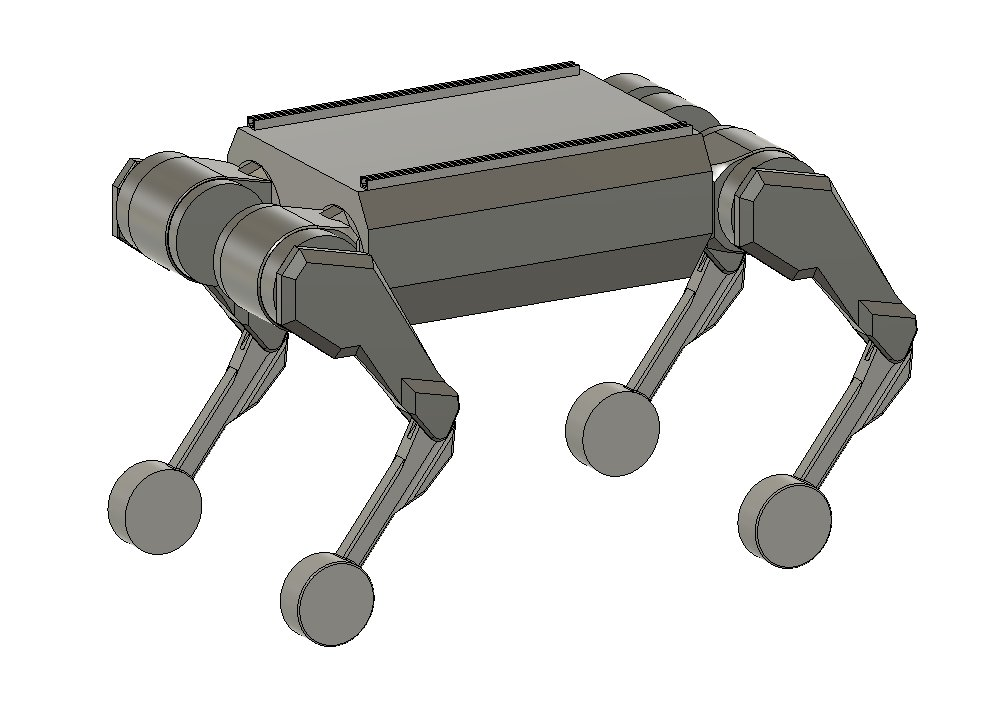
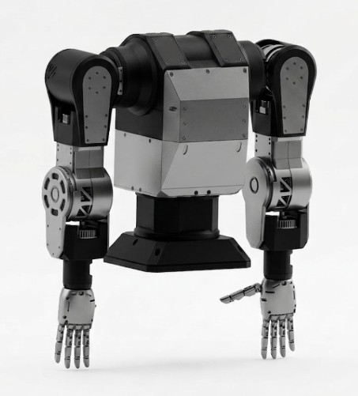
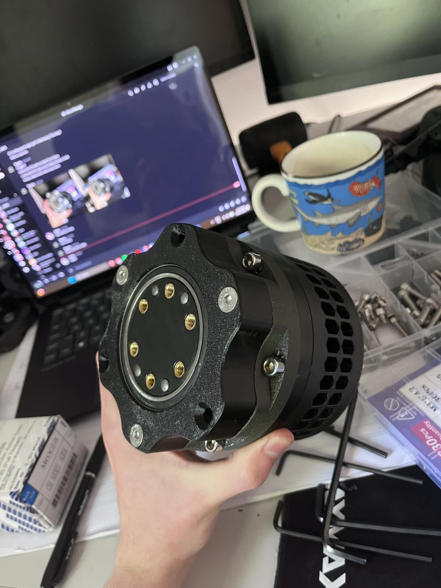
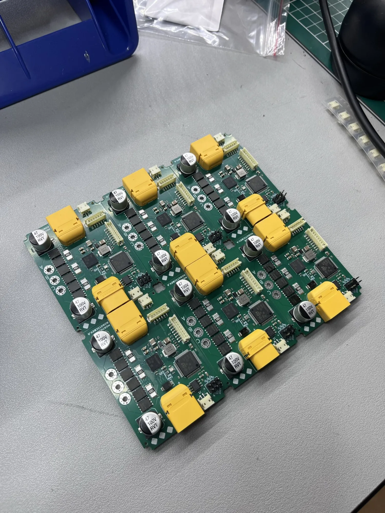
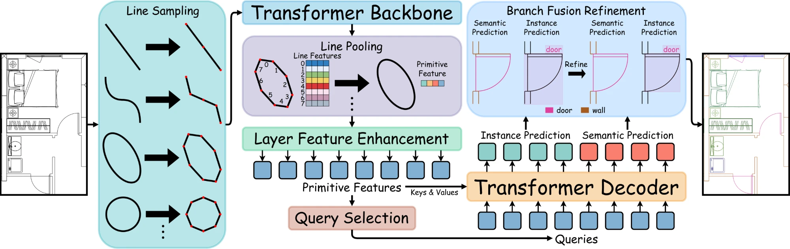
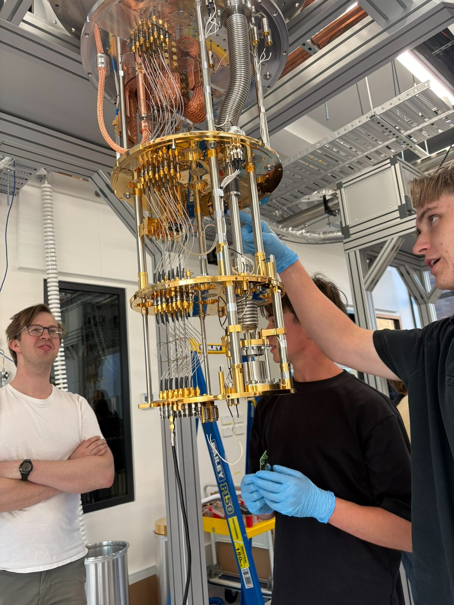
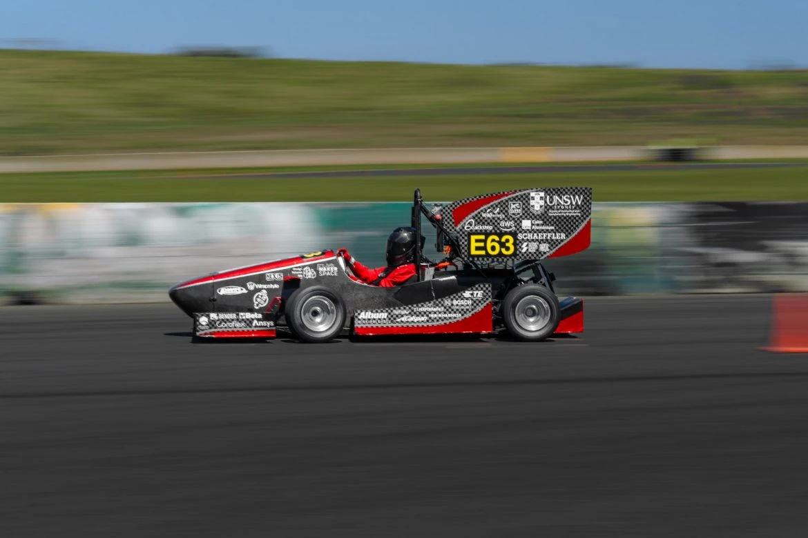

october 2026
2nd year electrical engineering and physics student at UNSW/TUM interested in building great things
in design.

a real steel humanoid, built to fight. 80 N·m actuators, 3d printed, designed end to end. motor drivers from scratch as well: 48 V, 100 A peak, about $3k cheaper than buying them. low budget, high performance.



sydney. led core projects, sat with customers and scaled the business before leaving out of curiosity for something greater.

designed, tested and deployed a board that now runs inside a quantum computer, with the qed group at UNSW.

joined the fsae team as one of the only first years taken that intake. powertrain systems and pcb design.
